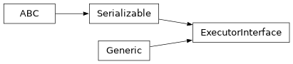

ExecutorInterface#
Module: iqm.station_control.interface.executor_interface
- class ExecutorInterface#
Bases:
Serializable,Generic[T_JobDefinition,T_JobTracker]Interface for managing quantum job execution and results retrieval.
Implementations are responsible for protocol-specific communication with execution backends, such as remote services, local processes, or hardware simulators.
Methods
Cancel a job that has been submitted for execution.
Delete a job that has been submitted for execution.
Get the measurement counts of a circuit batch execution job.
Get the measurement results of a circuit batch execution job.
Get the results of an N-dimensional sweep job.
Get control channel properties, including hardware limitations and supported instructions.
Get the chip design record for the QPU.
Get the QPU chip label.
Get the default experiment configuration for the backend.
Get status information about an existing job.
Get the job payload, i.e. the definition used to create the job.
Get software version set ID from the database, or create one if it doesn't exist.
Default settings tree of the quantum computer.
Get the simplified QPU topology.
Submit a job definition for execution.
- abstractmethod get_experiment_configuration()#
Get the default experiment configuration for the backend.
- abstractmethod get_or_create_software_version_set(software_version_set)#
Get software version set ID from the database, or create one if it doesn’t exist.
- abstractmethod get_chip_design_record()#
Get the chip design record for the QPU.
- abstractmethod get_static_quantum_architecture()#
Get the simplified QPU topology.
Use
get_chip_design_record()for more detailed QPU topology information.- Return type:
- abstractmethod get_channel_properties()#
Get control channel properties, including hardware limitations and supported instructions.
- Return type:
- abstractmethod get_settings()#
Default settings tree of the quantum computer.
Contains the available settings of the control instruments, and their default values.
- Return type:
- abstractmethod submit_job(job_definition, *, use_timeslot=False)#
Submit a job definition for execution.
- Parameters:
job_definition (T_JobDefinition) – The content of the job to be created (e.g. and experiment run, or a batch of quantum circuits).
use_timeslot (bool) – Iff
True, submit the job to the priority timeslot queue; otherwise, submit it to the shared FIFO queue.
- Returns:
A
JobTrackerinstance wrapping the submitted job, providing methods to track progress and retrieve results.- Return type:
T_JobTracker
- abstractmethod get_job(job_id)#
Get status information about an existing job.
Allows for managing jobs submitted in previous sessions or by other clients.
- abstractmethod get_job_payload(job_id, job_type)#
Get the job payload, i.e. the definition used to create the job.
- abstractmethod get_artifact_sweep_results(job_id)#
Get the results of an N-dimensional sweep job.
Raises an error if the results are not available.
- abstractmethod get_artifact_measurements(job_id)#
Get the measurement results of a circuit batch execution job.
Raises an error if the results are not available.
- abstractmethod get_artifact_measurement_counts(job_id)#
Get the measurement counts of a circuit batch execution job.
Raises an error if the results are not available.
- Parameters:
- Returns:
For each circuit in the batch, the measurement counts.
- Return type:
- abstractmethod cancel_job(job_id)#
Cancel a job that has been submitted for execution.
A canceled job will remain in the execution record, but it will not proceed further. If the job is currently being executed, it is interrupted. If the job has already reached a terminal state (completed or failed), it will remain in that state.
- abstractmethod delete_job(job_id)#
Delete a job that has been submitted for execution.
Works like
cancel_job(), but also removes the job from the IQM Server database.Warning
There is no way to recover a deleted job.
Inheritance
